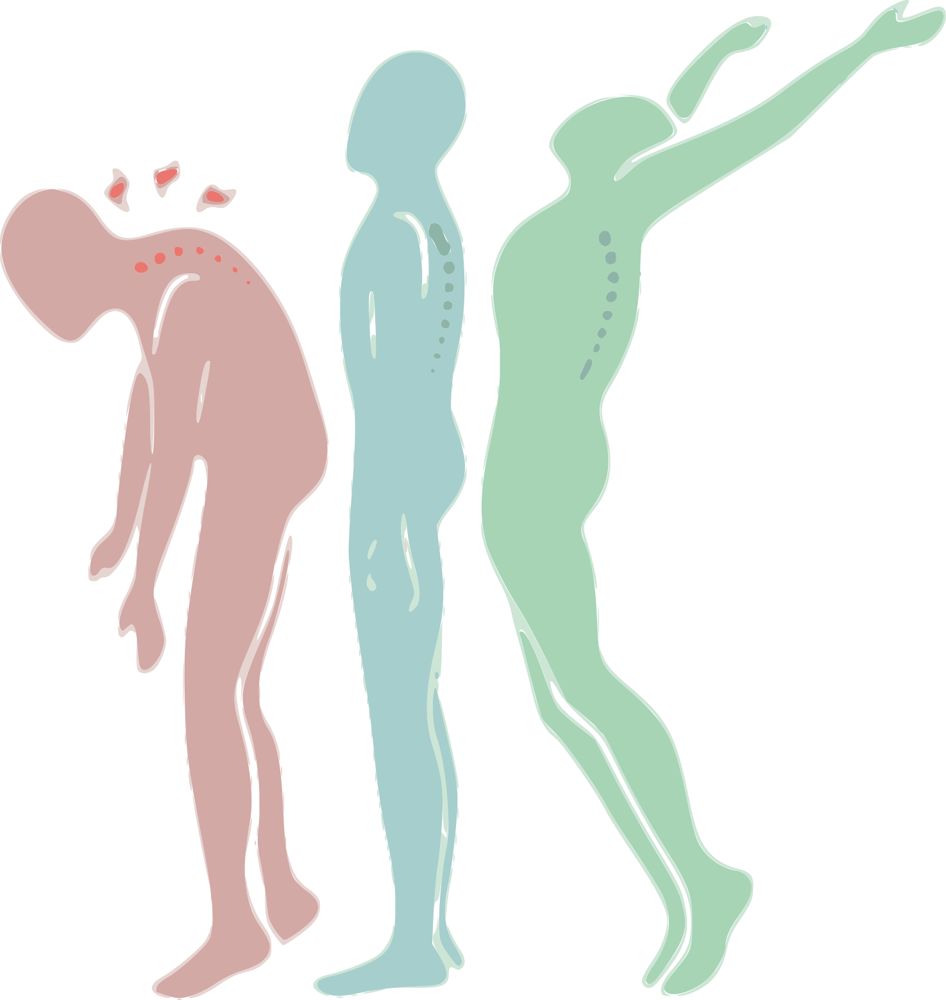

U Korektivi radi tim diplomiranih fizioterapueta, dodatno školovanih u Šrot (Schroth)
tehnici. Radi se o visoko efektivnoj i uspešnoj metodi vežbanja i terapije, koja ima za
cilj da ispravi i/ili zaustavi krivljenje kičme. Ovakav konzervativni vid tretmana se
pokazao kao najbolji kod skolioza i kifoza. Program vežbi se određuje na individualnom
nivou i prati napredak svakog pojedinačnog polaznika. Takođe, postoje i programi za druge
deformitete, poput ravnih stopala, X i O nogu. Pored toga, naš tim primenjuje i druge
tehnike za bolna stanja koštanog i mišićnog sistema. Na ovom linku možete pogledati
prilog
o centru Korektiva.
